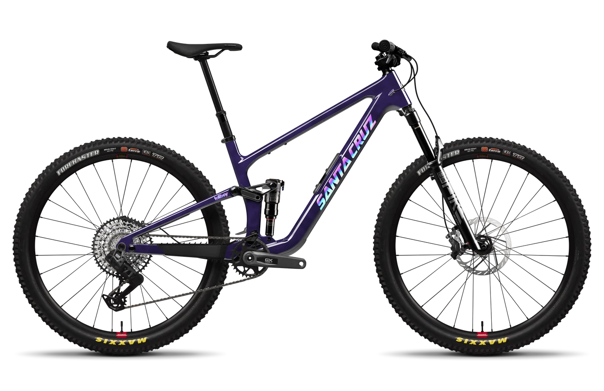
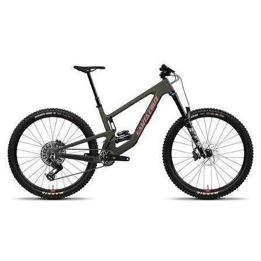
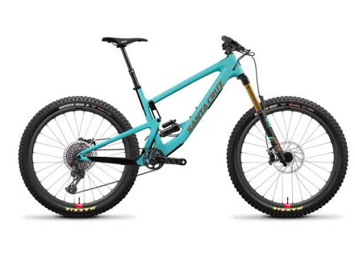
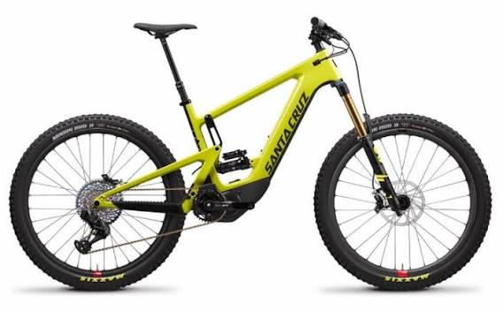
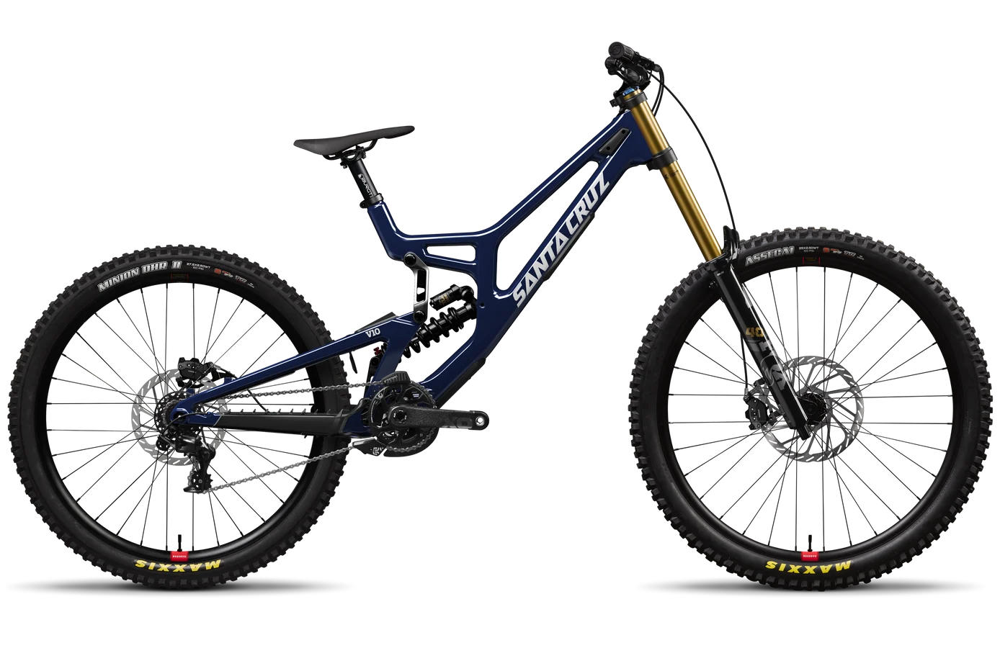

Suspensão VPP
O sistema Virtual Pivot Point é apresentado como tecnologia que busca otimizar a absorção de impactos sem perder eficiência de pedalada.
A Santa Cruz Bicycles combina engenharia, desempenho e cultura de trilha para criar bicicletas de alta performance voltadas a quem leva o mountain bike a sério.
A marca
A Santa Cruz Bicycles é uma fabricante estadunidense de bicicletas de alto desempenho, fundada em 1994, na cidade de Santa Cruz, Califórnia, por Rob Roskopp e Rich Novak. A empresa começou em uma garagem e ganhou reconhecimento no universo do ciclismo off-road.
O primeiro modelo, Tazmon, marcou a trajetória da empresa. Atualmente, a marca atua principalmente no segmento premium, com bicicletas de carbono e alumínio para Downhill, Enduro, Trail, Cross Country (XC) e Gravel.
Identidade visual
A identidade visual trabalha com uma estética limpa e utilitária, deixando as fotografias de ação e o desenho das bicicletas como protagonistas.

Engenharia
A proposta da marca combina materiais, suspensão e configurações de alto desempenho para diferentes estilos de pilotagem.
O sistema Virtual Pivot Point é apresentado como tecnologia que busca otimizar a absorção de impactos sem perder eficiência de pedalada.
O Carbono C combina rigidez e durabilidade por um valor mais acessível, enquanto o CC utiliza uma construção mais sofisticada e mais leve.
O material analisado destaca garantia vitalícia para quadros e rolamentos e política de substituição vitalícia para rodas Reserve.
Portfólio
A linha analisada contempla diferentes propostas de uso, da descida extrema às travessias longas.

Projetada para descidas agressivas e competições, com rodas aro 29 e curso de suspensão longo.

Modelo versátil associado à configuração Mullet, equilibrando estabilidade e agilidade nas curvas.

A proposta “faz-tudo” da linha, equilibrando eficiência nas subidas e capacidade nas descidas.

Modelo de corrida focado em descidas extremas e associado às competições de downhill.
Personalização
O Bike Builder da Santa Cruz permite combinar cor, material do quadro, rodas e transmissão para montar a bike exata que você imaginou.
Cores sazonais — alternância entre acabamentos foscos e brilhosos a cada temporada.
Atletas, reviews e competições apresentam a marca ao público que ainda não conhece o produto.
Comparação de modelos, geometrias, materiais de quadro e build kits em detalhe técnico.
Bike Builder permite montar a combinação exata de cor, quadro, rodas e transmissão.
Garantias vitalícias e revendedores especializados fecham o ciclo com segurança.
Próxima experiência
Explore os modelos, compare configurações e conheça as possibilidades de personalização apresentadas pela marca.